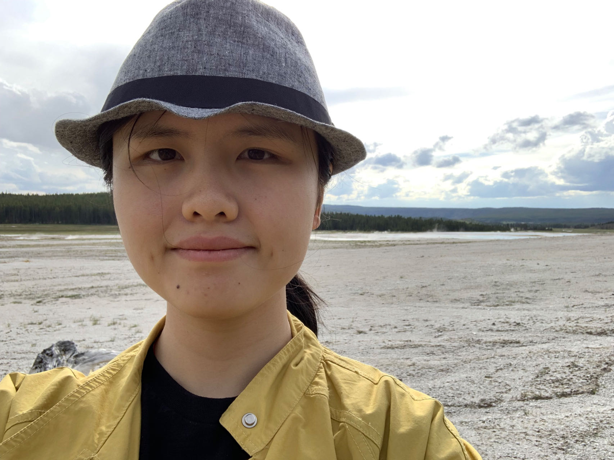
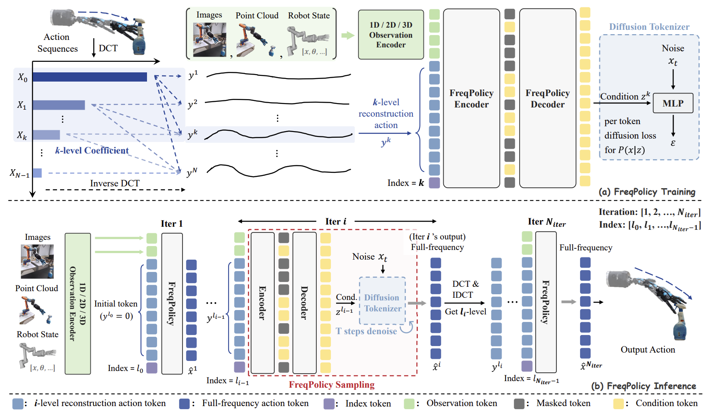
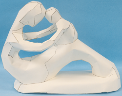
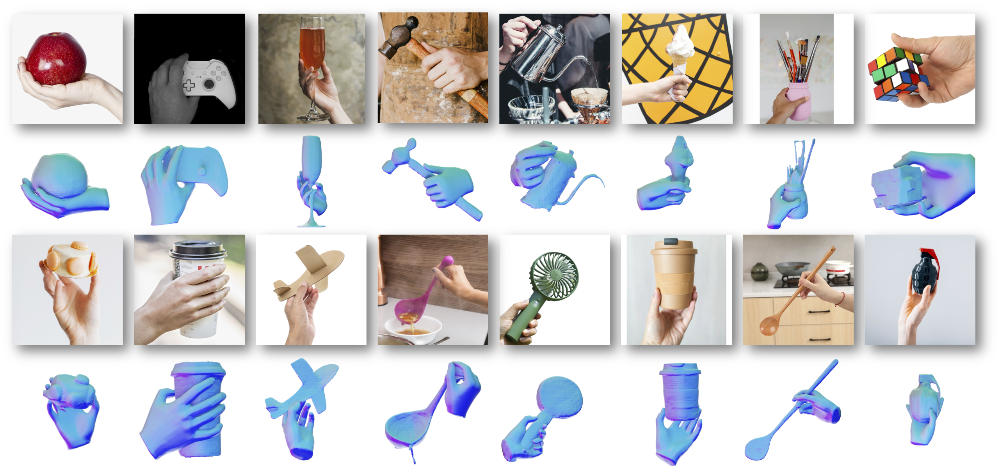
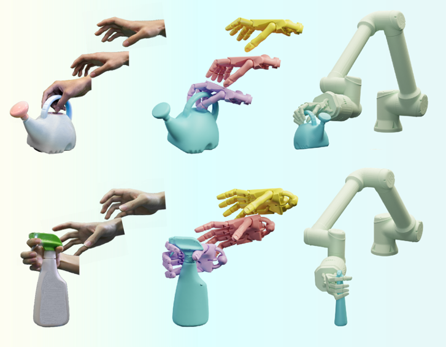
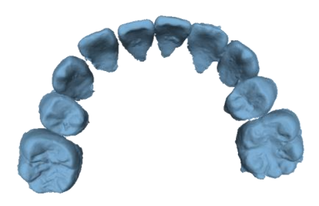

|  |
Yumeng Liu （刘雨萌）
Ph.D. Candidate @ HKU
|
|

|
FreqPolicy: Frequency Autoregressive Visuomotor Policy with Continuous Tokens
Yiming Zhong, Yumeng Liu , Chuyang Xiao, Zemin Yang, Youzhuo Wang, Yufei Zhu, Ye Shi, Yujing Sun, Xinge Zhu, Yuexin Ma† [Code] [Arxiv] |
|

|
A Potential Field Method for Tooth Motion Planning in Orthodontic Treatment Yumeng Liu, Yuexin Ma, Lei Yang, Congyi Zhang†, Guangshun Wei, Runnan Chen, Min Gu, Jia Pan, Zhengbao Yang, Taku Komura, Shiqing Xin, Yuanfeng Zhou, Changhe Tu, Wenping Wang† IEEE Transactions on Visualization and Computer Graphics (TVCG), 2025. |
|

|
EasyHOI: Unleashing the Power of Large Models for Reconstructing Hand-Object Interactions in the Wild
Yumeng Liu, Xiaoxiao Long†, Zemin Yang, Yuan Liu, Marc Habermann, Christian Theobalt, Yuexin Ma†, Wenping Wang Conference on Computer Vision and Pattern Recognition(CVPR), 2025. [Code] [Arxiv] |
|

|
Realdex: Towards human-like grasping for robotic dexterous hand
Yumeng Liu*, Yaxun Yang*, Youzhuo Wang*, Xiaofei Wu, Jiamin Wang, Yichen Yao, Sören Schwertfeger, Sibei Yang, Wenping Wang, Jingyi Yu, Xuming He, Yuexin Ma† International Joint Conference on Artificial Intelligence(IJCAI), 2024. [Code] [Database] [DOI] |
|

|
Tanet: Towards fully automatic tooth arrangement
Guodong Wei, Zhiming Cui, Yumeng Liu, Nenglun Chen, Runnan Chen, Guiqing Li, Wenping Wang† European Conference on Computer Vision (ECCV), 2020. [DOI] |